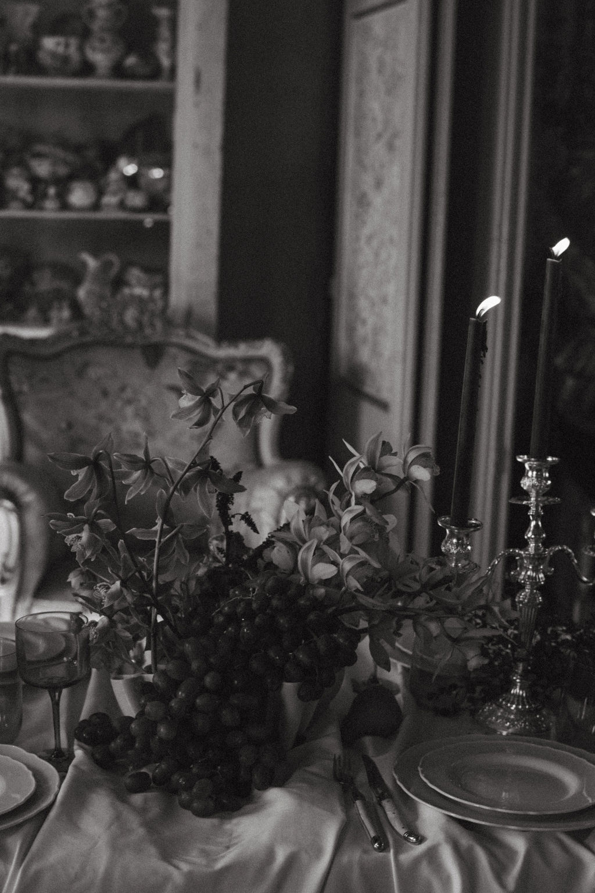
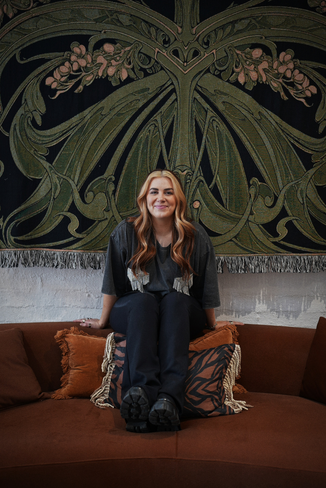
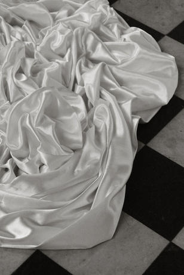
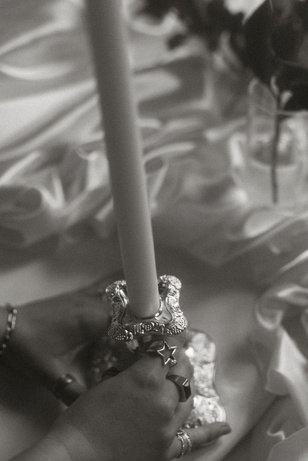
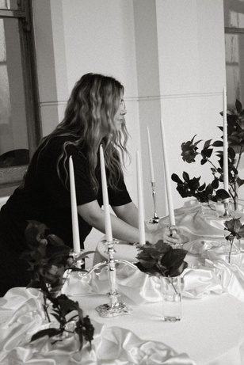
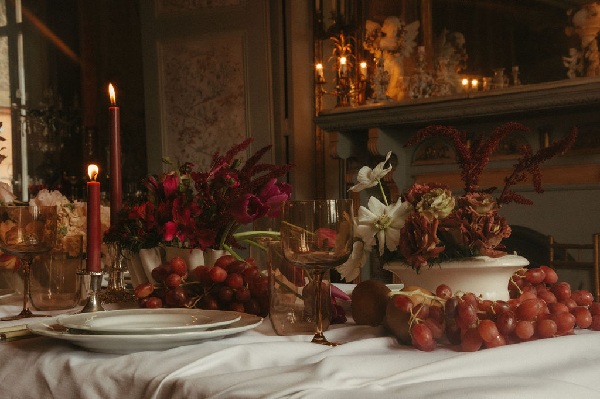

Made for
a good time
SAID STUDIO is a Naarm / Melbourne-based event design studio specialising in event styling and custom draping installations. From our studio in Windsor, we design, fabricate and deliver celebrations that transform the way spaces are experienced.

Thoughtfulby design
Every project is creatively led by founder and creative director Carolyn Hutchins, and brought to life by a trusted team of textile makers, stylists and installation specialists.
Before founding SAID STUDIO, Carolyn spent 14 years leading complex projects across global marketing teams, developing a way of working that balances creativity with precision. That same approach now shapes every celebration, from the first concept sketch through to the final installation.
Working from our Windsor studio on Artists' Lane, our team designs and handcrafts bespoke drapery and textile installations before bringing them to life on site. Every fold is pinned by hand, every installation is made specifically for its venue, and every celebration is approached with fresh eyes.
We intentionally remain a boutique studio, taking on a limited number of projects each year so every client receives the time, creative thinking and hands-on collaboration their celebration deserves.




Testimonials
“Beyond the beautiful aesthetic, the true impact was in the way guests engaged with the space and our brand. The environment invited connection — encouraging conversation, styling moments, and meaningful interaction with the collection.”
— Zehan Putri, Marketing Manager, SHEIKE“Carolyn was an absolute dream to work with! Organising an event from interstate from my end was going to be challenging, but she managed to bring everything together seamlessly and truly brought the vision to life.”
— Tracey, 30th Birthday Celebration“…we honestly don't know where we would have been without Carolyn. Everything was absolutely perfect and that's all thanks to her. Our wedding felt like us, and she was such a big part of making that happen.”
— M & C, Wedding“I had no idea where to begin or exactly what we wanted. I gave Carolyn a palette of colours and a collection of words describing how we wanted the day to feel. From there, she managed everything so effortlessly, creating an atmosphere that allowed us to truly feel like guests at our own wedding. Every detail was intentional, intimate and beautifully considered.”
— S & S, WeddingLet’s create something unexpected.
We intentionally take on a limited number of events each year, so every celebration receives the care it deserves. Tell us about yours.
Enquire Now